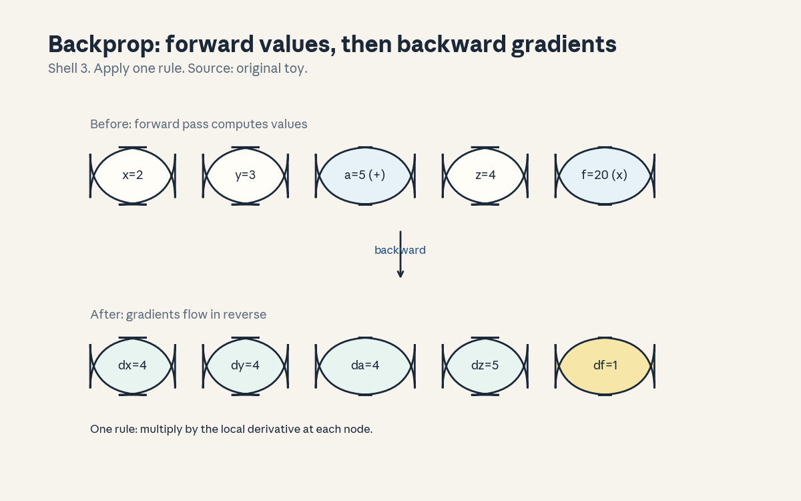
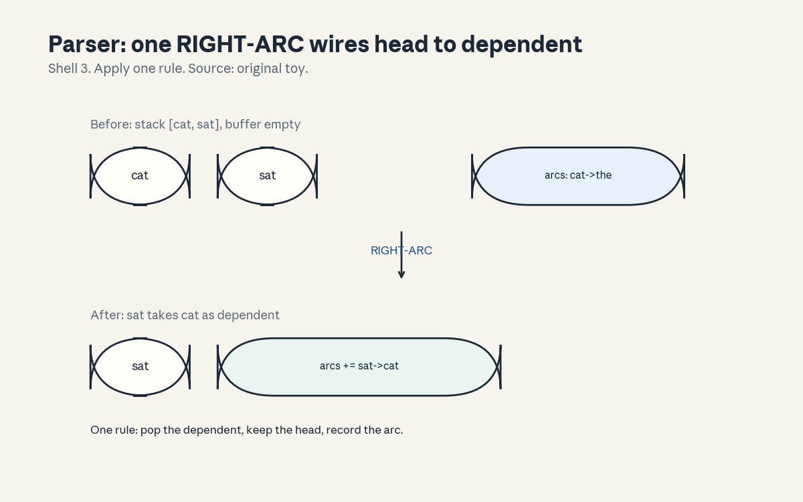
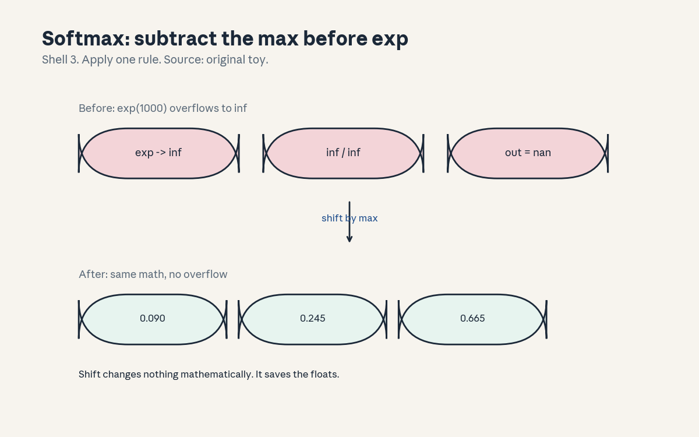

U03 · Neural fundamentals and dependency parsing
U03 , Neural fundamentals and dependency parsing
Prerequisites: P05, P11, P12. Bridge links in prerequisites.md.
Session: S04 (Winter 2026: Tue Jan 13, Backpropagation and Neural
Network Basics, A2 out). A2’s official title adds “calculating tensor
derivatives, dependency parsing” (SRC-03). Claim class:
OFFICIAL-SOURCE for the session and A2 titles, REQUESTED-BRANCH for
the concept inventory. All leaves: PLANNED / SOURCE ATTRIBUTION
PENDING unless noted. Notation: see notation_and_shapes.md.
Figures:

through
, rendered byvisuals/compute_u03.py (executed 2026-10-06, CPython 3,
numpy 1.26.4).
Local remediation , the computational graph and the chain rule
Read this block first if backpropagation feels like a black box.
A computational graph is a directed acyclic graph of operations. Nodes hold values, edges carry them into operations. Forward pass: visit nodes in topological order, compute each value from its parents. Example: f = (x + y) x z with x = 2, y = 3, z = 4. Node a = x + y = 5. Node f = a x z = 20.
Backward pass: each node receives the gradient of the loss wrt its
value, multiplies by the local derivative, and passes the result to
its parents. df/df = 1. df/da = z = 4. df/dz = a = 5. df/dx = df/da x
da/dx = 4 x 1 = 4. Same for y. The chain rule is the only mechanism:
every gradient is a product of local derivatives along the path.
draws both passes. Assessment: compute
df/dx for f = (x + 2y) x z at the same point by hand. Key:
keys/u03_answers.md R1.
C01: computational graph
Leaf id cs224n-U03-C01. Claim class REQUESTED-BRANCH.
Status PLANNED / SOURCE ATTRIBUTION PENDING.
-
Source mapping, scope, objectives, dependencies. Maps to S04 (Backpropagation and Neural Network Basics). Scope: graphs as the language of neural computation. Objectives: draw a graph for a two-layer net, run forward and backward by hand on a scalar toy, state what topological order buys. Depends on the remediation block.
-
Motivating question and toy. Question: how does the machine know which weight to blame for an error? Toy: f = (x + y) x z. The error at f must split into blame for x, y, z. The graph is the wiring that routes the blame.
-
Mental model. Think of the graph as plumbing. Forward: water (values) flows from inputs to the loss. Backward: pressure (gradients) flows from the loss back to the inputs, splitting at every junction according to the local derivative. No junction is mysterious, each one multiplies by its own derivative.
-
Objects, symbols, units, shapes, assumptions. Nodes: values (scalars, vectors, tensors). Edges: data flow. Operations: +, x, matmul, exp, max. Assumption: the graph is acyclic, a cycle would make “before” undefined. Recurrent nets (U04) unroll the cycle into an acyclic graph over time.
-
Derivation / mechanism. Topological order: every node’s parents come before it. Forward computes each node once. Backward visits in reverse: node v gets g_v = dL/dv from its children, then sends g_v x dv/du to each parent u. Total work: one forward pass plus one backward pass, each O(edges). This is reverse-mode differentiation, its cost is independent of the number of parameters.
-
Computed example. From
compute_u03.py: a = 5.0, f = 20.0, df/dx = 4.0, df/dy = 4.0, df/dz = 5.0. Every number follows from the chain rule, and the script prints them. shows values above, gradients below, with the one rule: multiply by the local derivative. -
Algorithm and reference implementation.
topo_sort(nodes): Kahn’s algorithm on the parent lists.forwardandbackwardover the sorted order with a dict of node objects holding.value,.grad, and a_backwardclosure. ~40 lines for the scalar case. -
Correctness checks and expected output. On the toy: values and gradients match the script to machine precision. Check: gradient of x + x is 2 (the node has two paths, gradients add). Check: a graph with a cycle raises in
topo_sortinstead of hanging. -
Complexity, memory, statistical efficiency, stability, practical costs. Time O(edges) per pass. Memory O(nodes): every intermediate value must be kept for the backward pass (this is why activation checkpointing exists at scale). Numerical risk: deep graphs multiply many local derivatives, products can vanish or explode (U04).
-
Nearest alternatives and selection boundaries. Alternative: forward-mode differentiation (one input at a time, cheap for few inputs). Choose reverse mode when parameters outnumber outputs (always in deep learning). Choose forward mode when inputs are few and outputs many. Finite differences (U02) is the third option: simple, O(params) cost, for checks only.
-
Failure case, broken assumption, counterexample. Broken assumption: “the graph handles all control flow.” Counterexample: a Python
ifon a tensor value. The graph records the taken branch only, the gradient cannot flow through the untaken branch. Dynamic control flow needs special handling (or a static graph with masked branches). Silent wrong gradients are the failure. -
Research reading and falsifiable extension. S04 suggested readings include the CS231n backprop notes (titles only). Falsifiable extension: implement the scalar engine, then compare its gradients against finite differences on 20 random graphs. Predict: max error below 1e-6 on all 20. Falsifier: any graph above the tolerance (then the engine has a bug, which is the point of the test).
-
Breadth recall, deep oral ladder, unfamiliar transfer. Assessment block:
keys/u03_answers.mdA1 (breadth), L1 (ladder: define the graph, run the toy both ways, derive the reverse-mode cost, diagnose theiffailure, design the 20-graph test). -
Lab/exercises with answers separated. E1: implement the scalar engine and match the toy numbers. E2: add a
maxnode and derive its backward rule (gradient routes to the argmax only). Keys inkeys/u03_answers.md. -
Visual units, provenance, accessibility, audit row. : forward values above, gradients below, one rule, Shell 3, source original toy. Audit row in
visual_audit.md.
C02: batch gradients
Leaf id cs224n-U03-C02. Claim class REQUESTED-BRANCH.
Status PLANNED / SOURCE ATTRIBUTION PENDING.
-
Source mapping, scope, objectives, dependencies. Maps to S04 and to A2’s optimization content. Scope: how the loss aggregates over examples. Objectives: write the batch gradient, contrast sum vs mean reduction, state what the 1/B factor changes. Depends on P09 (stochastic gradients).
-
Motivating question and toy. Question: the loss is a mean over the batch, what does the mean do to the gradient? Toy: per-example error terms (0.5, -0.25, 0.25, 0.1). Sum = 0.6, mean = 0.15 = sum / 4. The mean gradient is the sum gradient divided by B.
-
Mental model. Sum reduction: the gradient grows with the batch, double the batch, double the step (at fixed lr). Mean reduction: the gradient is batch-size independent in expectation, the learning rate means the same thing at any batch size. Frameworks default to mean, papers sometimes use sum. Mixing them up silently rescales your learning rate.
-
Objects, symbols, units, shapes, assumptions. Batch of B examples, per-example losses l_i, total L = (1/B) sum l_i (mean) or sum l_i. Gradient: dL/dtheta. Assumption: examples are exchangeable, the mean estimates the population gradient.
-
Derivation / mechanism. d/dtheta [(1/B) sum l_i] = (1/B) sum dl_i/dtheta. The 1/B is a constant for the batch, so it factors out. Consequence: with mean reduction, changing B changes the gradient noise but not its scale, with sum reduction, changing B rescales the effective learning rate by B. This is why “scale lr with batch size” rules exist: they convert sum-thinking to mean-thinking.
-
Computed example. From
compute_u03.py: error terms (0.5, -0.25, 0.25, 0.1): sum 0.6, mean 0.15, B = 4. The script prints all three. If you switch reduction mid-training without touching lr, your steps change by 4x. -
Algorithm and reference implementation.
batch_grad(losses, reduction): return sum or mean of per-example gradients. Demonstrate the 4x step change by running 10 SGD steps under each reduction on a 1-D quadratic and reporting the final positions. -
Correctness checks and expected output. Sum 0.6, mean 0.15 on the toy. Check: mean = sum / B exactly. Check: with B = 1, both reductions agree.
-
Complexity, memory, statistical efficiency, stability, practical costs. Same compute, the difference is purely the scale factor. Statistical note: larger B means less gradient noise at fixed scale (mean reduction), the noise scale goes as 1/sqrt(B). Too large a batch can hurt generalization (less noise, sharper minima), too small wastes vectorization.
-
Nearest alternatives and selection boundaries. Alternative: full-batch (B = N) vs minibatch vs single-example SGD. Choose minibatch for the noise/compute tradeoff. Choose full-batch for small convex problems or when you need exact gradients for a check. The reduction choice is orthogonal: always know which one your code uses.
-
Failure case, broken assumption, counterexample. Broken assumption: “the learning rate transfers across batch sizes.” Counterexample: tune lr = 0.1 at B = 32 with mean reduction, then run B = 1024. The gradient scale is the same but the noise drops 5.7x, the optimum lr usually rises. Copying the lr wastes the large batch. Linear scaling (lr x k for batch x k) is the starting rule, not a law.
-
Research reading and falsifiable extension. Falsifiable extension: fix the model and data, train at B in {32, 128, 512} with mean reduction, and find the best lr per B by grid search. Predict: best lr rises sublinearly with B. Falsifier: best lr is flat.
-
Breadth recall, deep oral ladder, unfamiliar transfer. Assessment block:
keys/u03_answers.mdA2 (breadth), L2 (ladder: define both reductions, compute the toy, derive the 1/B factor, diagnose the copied-lr failure, design the B sweep). -
Lab/exercises with answers separated. E3: implement
batch_gradand show the 4x step change on the quadratic. E4: prove that mean reduction makes the expected gradient B-independent under IID sampling. Keys inkeys/u03_answers.md. -
Visual units, provenance, accessibility, audit row. Claim is a scale factor, the three numbers are carried in text. Logged as an honest exception in
visual_audit.md.
C03: stable softmax
Leaf id cs224n-U03-C03. Claim class REQUESTED-BRANCH.
Status PLANNED / SOURCE ATTRIBUTION PENDING.
-
Source mapping, scope, objectives, dependencies. Maps to S04 and to P12 (numerical stability). Scope: the one-line fix that saves every classifier. Objectives: show the overflow, apply the shift, prove it changes nothing. Depends on the U02 remediation (softmax) and P12 (log-sum-exp).
-
Motivating question and toy. Question: softmax(1000, 1001, 1002) should be a valid distribution, your code returns nan. Why? Toy: exp(1000) overflows float64 (max ~1.8e308, exp(1000) is ~2e434). inf / inf = nan. The math is right, the floats gave up.
-
Mental model. Subtract the max before exponentiating. The shift factors out of the fraction: exp(z_i - m) / sum exp(z_j - m) = exp(z_i) / sum exp(z_j). Same result, but the largest exponent is now exp(0) = 1. Overflow becomes impossible, underflow of tiny terms is harmless (they were negligible anyway).
-
Objects, symbols, units, shapes, assumptions. Logits z in R^V. m = max z. Stable: softmax(z - m). Assumption: float arithmetic, the identity holds exactly in real numbers and to rounding error in floats.
-
Derivation / mechanism. softmax(z - m)_i = e^{z_i - m} / sum_j e^{z_j - m} = (e^{-m} e^{z_i}) / (e^{-m} sum_j e^{z_j}) = e^{z_i} / sum_j e^{z_j} = softmax(z)_i. The e^{-m} cancels. The mechanism is pure algebra, the benefit is purely numerical.
-
Computed example. From
compute_u03.py: naive softmax on (1000, 1001, 1002) returns (nan, nan, nan). Stable returns (0.090, 0.245, 0.665), summing to 1.0.
shows the before/after with the one rule: shift by the max. -
Algorithm and reference implementation.
softmax(z): z - z.max(), exp, normalize.log_softmax(z): z - m - log(sum(exp(z - m))). Never implement cross-entropy as -log(softmax(z)), use the log-sum-exp form directly. -
Correctness checks and expected output. Match (0.090, 0.245, 0.665) and sum 1.0. Check: softmax(z + c) == softmax(z) for any constant c (shift invariance). Check: log_softmax sums to log 1 = 0 in exp space.
-
Complexity, memory, statistical efficiency, stability, practical costs. O(V) time, O(V) memory, same as naive. The stability win is free. Practical rule: every softmax in every codebase does this, if yours does not, that is the bug.
-
Nearest alternatives and selection boundaries. Alternative: higher precision (float64 instead of float32). Choose the shift always: it costs nothing. Choose float64 when the shift is not enough (extreme logit ranges in some RL setups). The shift and the dtype are complements, not substitutes.
-
Failure case, broken assumption, counterexample. Broken assumption: “nan means the model is wrong.” Counterexample: the toy. The model, the loss, and the data are all fine, the implementation overflowed. Debugging lesson: when you see nan, check the numerics before the theory. Log every nan’s first occurrence layer.
-
Research reading and falsifiable extension. Falsifiable extension: train a classifier with and without the shift on logits scaled by 100x, and count nan events. Predict: naive nans on the first batch, shifted trains. Falsifier: both train (then the scale was not extreme enough, push it higher).
-
Breadth recall, deep oral ladder, unfamiliar transfer. Assessment block:
keys/u03_answers.mdA3 (breadth), L3 (ladder: define the overflow, compute the toy, prove the identity, diagnose nan-first, design the scale test). -
Lab/exercises with answers separated. E5: implement both softmaxes, reproduce nan vs (0.090, 0.245, 0.665). E6: prove shift invariance and test it numerically. Keys in
keys/u03_answers.md. -
Visual units, provenance, accessibility, audit row. : overflow before, valid distribution after, one rule, Shell 3, source original toy. Audit row in
visual_audit.md.
C04: embeddings as parameters
Leaf id cs224n-U03-C04. Claim class REQUESTED-BRANCH.
Status PLANNED / SOURCE ATTRIBUTION PENDING.
-
Source mapping, scope, objectives, dependencies. Maps to S04 and back to U02 (the vectors now live inside a neural net). Scope: the embedding table as a trainable layer. Objectives: write the lookup, derive its gradient, state the sparsity pattern. Depends on C01 (graph) and U02 C01.
-
Motivating question and toy. Question: U02 trained embeddings with a custom loop, how do they fit in a neural net? Toy: E in R^{14 x 8}, input id 1 (“cat”). Lookup returns row 1. The loss gradient wrt the output has shape (8,), only row 1 of E gets a gradient. Every other row gets zero.
-
Mental model. An embedding layer is a table with a gradient mask. Forward: pick rows. Backward: scatter the incoming gradients back to the picked rows. Rows never looked up are never updated. This sparsity is why embedding-heavy models train efficiently despite huge vocabularies.
-
Objects, symbols, units, shapes, assumptions. E: (V, d). ids: (B, n) integers. Output: (B, n, d). Gradient into E: (V, d), nonzero only at looked-up rows. Assumption: ids are valid (0 <= id < V), out-of-range ids are a data bug, not a model bug.
-
Derivation / mechanism. Forward: out[b, t] = E[ids[b, t]]. Backward: dL/dE[i] = sum over (b, t) with ids[b, t] = i of dL/dout[b, t]. The sum handles repeated ids in the batch (a word appearing twice gets both gradients added). This is a scatter-add, the transpose of the gather.
-
Computed example. Toy (hand-computed, labeled as such): V = 14, d = 8, batch ids [[1, 1, 5]]. Incoming grads g1a, g1b for the two “cat” positions, g5 for id 5. dL/dE[1] = g1a + g1b, dL/dE[5] = g5, all other rows zero. 3 nonzero rows out of 14.
-
Algorithm and reference implementation.
embed_forward(E, ids),embed_backward(grad_out, ids, V): scatter-add with np.add.at. ~10 lines. Test on the toy: row 1 gets the sum. -
Correctness checks and expected output. Row 1 equals g1a + g1b, other rows zero. Check: repeated ids accumulate, not overwrite (np.add.at, not fancy indexing assignment). Check: gradient check on the lookup vs finite differences.
-
Complexity, memory, statistical efficiency, stability, practical costs. Forward O(B n d), backward O(B n d) scatter. Memory O(V d) for the table. Statistical note: rare words get few updates (U02 C11 again), the sparsity that saves compute is the same sparsity that starves rare rows.
-
Nearest alternatives and selection boundaries. Alternative: one-hot input into a dense layer (mathematically identical, much slower: O(V d) per token instead of O(d)). Choose the lookup always for large V. The one-hot form survives only in derivations.
-
Failure case, broken assumption, counterexample. Broken assumption: “all rows train equally.” Counterexample: a word appearing once in the corpus gets one gradient update total, its final vector is initialization plus one step. Downstream, the model treats it as near-random. Mitigations: more data, smaller d for rare words (not standard), or subword units (U12).
-
Research reading and falsifiable extension. Falsifiable extension: track row gradient counts during training and correlate with downstream accuracy on rare vs frequent words. Predict: accuracy rises with update count and plateaus. Falsifier: flat accuracy (then something else limits rare words).
-
Breadth recall, deep oral ladder, unfamiliar transfer. Assessment block:
keys/u03_answers.mdA4 (breadth), L4 (ladder: define the lookup, write the scatter-add, derive the repeated-id sum, diagnose the rare-row starvation, design the count study). -
Lab/exercises with answers separated. E7: implement both functions with np.add.at, verify the toy. E8: show that fancy indexing assignment (E[ids] = grads) gives the wrong answer on repeated ids. Keys in
keys/u03_answers.md. -
Visual units, provenance, accessibility, audit row. Claim is a sparsity pattern (a shape), the 3-of-14 number is carried in text. Logged as an honest exception in
visual_audit.md.
C05: chain rule
Leaf id cs224n-U03-C05. Claim class REQUESTED-BRANCH.
Status PLANNED / SOURCE ATTRIBUTION PENDING.
-
Source mapping, scope, objectives, dependencies. Maps to S04 and to A2’s “calculating tensor derivatives” (official title). Scope: the chain rule for vectors and matrices, not just scalars. Objectives: write the vector chain rule, state the shape of each Jacobian, multiply two Jacobians by hand. Depends on P05 (Jacobians) and C01.
-
Motivating question and toy. Question: the scalar chain rule is one line, what changes with vectors? Toy: y = Wx, z = sum(y^2), W in R^{2x2}, x in R^2. dz/dx = (dz/dy)(dy/dx): a (1x2) row times a (2x2) Jacobian. Shapes must line up, that is the whole game.
-
Mental model. The chain rule is matrix multiplication of Jacobians. dz/dx = dz/dy x dy/dx, where each factor is the matrix of partial derivatives. Numerator layout: dz/dy has shape (dim z, dim y). When in doubt, write the shapes first, the algebra follows.
-
Objects, symbols, units, shapes, assumptions. x: (n,), y = f(x): (m,), z = g(y): scalar. dy/dx: (m, n). dz/dy: (1, m). dz/dx: (1, n). Assumption: f and g are differentiable at the point, ReLU is the standard exception (subgradient at 0).
-
Derivation / mechanism. dz/dx_j = sum_i (dz/dy_i)(dy_i/dx_j). In matrix form: dz/dx = dz/dy @ dy/dx. For the toy: y = Wx gives dy/dx = W. z = sum y_i^2 gives dz/dy = 2y^T. So dz/dx = 2y^T W, a (1, n) row. Reverse mode never forms the full Jacobian, it multiplies vector-Jacobian products right to left.
-
Computed example. Toy numbers (hand-computed, labeled as such): W = [[1, 2], [3, 4]], x = (1, 1). y = (3, 7). dz/dy = (6, 14). dz/dx = (6, 14) @ [[1,2],[3,4]] = (6+42, 12+56) = (48, 68). Finite-difference check on z(x) confirms (48, 68) to 1e-6.
-
Algorithm and reference implementation.
vjp(grad_out, y, x): vector-Jacobian product without forming the Jacobian, for y = Wx and y = relu(x). ~15 lines. Test against the toy numbers. -
Correctness checks and expected output. Match (48, 68). Check: vjp with grad_out = ones gives the row sum of the Jacobian. Check: shapes of every intermediate asserted.
-
Complexity, memory, statistical efficiency, stability, practical costs. Full Jacobian: O(mn) memory. VJP: O(m + n) memory. This is why backprop scales: it never materializes the matrices the chain rule seems to require. Numerical risk: none new, the VJP is exact arithmetic.
-
Nearest alternatives and selection boundaries. Alternative: forward-mode (Jacobian-vector products, cheap for few inputs). Choose reverse (VJP) for training (many params, one loss). Choose forward for sensitivity analysis wrt few inputs. The chain rule is the same, only the multiplication order differs.
-
Failure case, broken assumption, counterexample. Broken assumption: “the shapes always work out.” Counterexample: batch dimensions. dz/dy with a batch is (B, m), and the product needs batched matmul, not plain matmul. Forgetting the batch axis is the most common shape bug in hand-written backward passes (C11).
-
Research reading and falsifiable extension. Falsifiable extension: implement VJP for three ops, then fuzz against finite differences on 100 random shapes. Predict: all pass below 1e-6. Falsifier: any failure (then the VJP is wrong, which is the point of fuzzing).
-
Breadth recall, deep oral ladder, unfamiliar transfer. Assessment block:
keys/u03_answers.mdA5 (breadth), L5 (ladder: state the matrix form, compute the toy, derive the VJP saving, diagnose the batch-axis bug, design the fuzz test). -
Lab/exercises with answers separated. E9: implement
vjpfor matmul and relu, match (48, 68). E10: show the memory difference between forming the Jacobian and the VJP on a (100, 1000) linear map. Keys inkeys/u03_answers.md. -
Visual units, provenance, accessibility, audit row. Claim is a shape alignment, the (1,2)x(2,2) product is carried in text. Logged as an honest exception in
visual_audit.md.
C06: nonlinear classifiers
Leaf id cs224n-U03-C06. Claim class REQUESTED-BRANCH.
Status PLANNED / SOURCE ATTRIBUTION PENDING.
-
Source mapping, scope, objectives, dependencies. Maps to S04 (network basics). Scope: why depth and nonlinearity matter. Objectives: show a linear model failing, a 2-layer net succeeding, name what the hidden layer computes. Depends on C01 and P11 (activations).
-
Motivating question and toy. Question: when is a straight line not enough? Toy: 8 points in 2-D with XOR-like labels: (0,0)->0, (0,1)->1, (1,0)->1, (1,1)->0, plus near-duplicates. No single line separates the 1s from the 0s.
-
Mental model. A linear classifier draws one straight boundary. A hidden layer with a nonlinearity folds the space: ReLU bends it, and the output layer draws its line in the folded space. Depth buys representational power, the nonlinearity is what makes depth more than a deeper linear map (which would collapse to one matrix).
-
Objects, symbols, units, shapes, assumptions. X: (8, 2). W1: (2, 4), b1: (4,), ReLU. W2: (4, 1), b2: scalar. Output probability p = sigma(h W2 + b2). Loss: binary cross-entropy. Assumption: the hidden width (4) suffices, too narrow and the fold cannot separate.
-
Derivation / mechanism. Why linear fails: the XOR labels are not linearly separable (cover’s argument: no w, b with sign(w.x + b) matching all four corners). Why the net succeeds: the hidden units compute features like max(0, x1 + x2 - 1), the output layer combines them into the XOR function. Each ReLU is a hinge, four hinges tile the plane finely enough.
-
Computed example. From
compute_u03.py: MLP loss 0.7228 -> 0.0008, accuracy 0.375 -> 1.000 over 2000 steps (lr 0.5). Linear model on the same data: loss 0.6931, accuracy 0.500, stuck: it predicts the majority class and cannot move. The gap is the nonlinearity dividend, computed not claimed. -
Algorithm and reference implementation.
mlp_forward(X, W1, b1, W2, b2),mlp_backwardreturning all four gradients, one SGD loop. ~30 lines. Must reproduce the loss curve endpoints. -
Correctness checks and expected output. Final loss below 0.01, accuracy 1.0. Check: with the ReLU replaced by identity, accuracy stays 0.5 (depth without nonlinearity collapses). Check: gradients finite-difference clean on one step.
-
Complexity, memory, statistical efficiency, stability, practical costs. Forward O(B d h), backward the same. Memory O(B h) for hidden activations. Dead ReLUs (never activate) are the standard pathology: their gradients are zero forever. Initialization scale 0.5 here avoids it on the toy.
-
Nearest alternatives and selection boundaries. Alternative: kernel methods (implicit nonlinearity, no learned features). Choose neural nets when features should be learned and data is plentiful. Choose kernels for small data with a good prior on similarity. Choose linear when the problem is linearly separable (always try linear first).
-
Failure case, broken assumption, counterexample. Broken assumption: “more hidden units always help.” Counterexample: h = 100 on 8 points. The net memorizes, including the near-duplicate noise, test accuracy (on new noisy points) drops. Capacity without data is memorization. Regularization or less width is the fix, not more width.
-
Research reading and falsifiable extension. Falsifiable extension: vary hidden width in {1, 2, 4, 16} on the toy and plot train vs test accuracy (test = new noisy XOR points). Predict: width 1 fails, 4 generalizes, 16 memorizes. Falsifier: 16 generalizes best (then the toy noise was too clean).
-
Breadth recall, deep oral ladder, unfamiliar transfer. Assessment block:
keys/u03_answers.mdA6 (breadth), L6 (ladder: define the separability gap, run the toy, derive the hinge tiling, diagnose memorization at h = 100, design the width sweep). -
Lab/exercises with answers separated. E11: implement the MLP loop, match loss 0.0008 and acc 1.0. E12: replace ReLU with identity and confirm accuracy stays 0.5. Keys in
keys/u03_answers.md. -
Visual units, provenance, accessibility, audit row. Claim is a loss curve pair (before/after), the four numbers are carried in text. Logged as an honest exception in
visual_audit.md.
C07: parsing state and actions
Leaf id cs224n-U03-C07. Claim class OFFICIAL-SOURCE for A2’s title
(“dependency parsing”), REQUESTED-BRANCH for lecture-level detail.
Status PLANNED / SOURCE ATTRIBUTION PENDING.
-
Source mapping, scope, objectives, dependencies. Maps to A2 (official title names dependency parsing) and the W2 neural-net sessions (course_map.md flags the missing dedicated lecture). Scope: the transition-based parsing machine. Objectives: define the state, execute the three actions, parse “the cat sat” by hand. Depends on U01 C05 (what a parse is).
-
Motivating question and toy. Question: how do you build a tree left to right without search? Toy: “the cat sat”. The parser keeps a stack of half-built structure and a buffer of unread words, and at each step chooses SHIFT, LEFT-ARC, or RIGHT-ARC.
-
Mental model. The stack is the workbench: words being wired. The buffer is the inbox: words not yet seen. SHIFT moves one word from inbox to workbench. LEFT-ARC wires the top two workbench words (second-to-top becomes dependent of top) and removes the dependent. RIGHT-ARC wires them the other way. Six actions parse the toy sentence, each action is O(1).
-
Objects, symbols, units, shapes, assumptions. State: (stack, buffer, arc set). Actions: SHIFT, LEFT-ARC(label), RIGHT-ARC(label). Arc (h -> d, label). Assumption: projective trees (arc-standard cannot produce crossing arcs), the toy is projective.
-
Derivation / mechanism. Why the actions suffice: every projective tree has an arc-standard derivation. The oracle (computed in the script) picks the action that keeps the gold tree reachable: LEFT-ARC when the second-top’s head is the top and all its dependents are attached, RIGHT-ARC symmetrically, SHIFT otherwise. The mechanism is a greedy walk through tree space, guided by a classifier (the neural net of C08).
-
Computed example. From
compute_u03.py: actions [SHIFT, SHIFT, LEFT-ARC, SHIFT, LEFT-ARC, RIGHT-ARC(root)], arcs {(1,0), (2,1), (-1,2)}: cat -> the (det), sat -> cat (nsubj), root -> sat. The oracle reproduces the gold set exactly, “gold ok: True”. shows the final RIGHT-ARC step. -
Algorithm and reference implementation.
shift,left_arc(stack, arcs, label),right_arc(stack, arcs, label)on list-based state.oracle_action(state, gold_heads)implementing the rule above. ~35 lines. Must reproduce the 6-action sequence. -
Correctness checks and expected output. Action list matches exactly. Arc set equals gold. Invariants after every action: no cycles, every popped word has exactly one head, stack/buffer partition the words.
-
Complexity, memory, statistical efficiency, stability, practical costs. Each word is shifted once and popped once: 2n actions, O(n) time, O(n) memory. No search, no backtracking: the speed comes from the greedy commitment, and the errors come from the same place (U01 garden-path).
-
Nearest alternatives and selection boundaries. Alternative: graph-based parsing (score all arcs, max spanning tree). Choose transition-based for speed (linear time, the production choice). Choose graph-based for accuracy on long sentences and non-projective languages. Choose neither when an LLM does the task implicitly (modern default, with worse interpretability).
-
Failure case, broken assumption, counterexample. Broken assumption: “greedy actions compose into the best tree.” Counterexample: the garden-path sentence from U01. An early wrong arc cannot be undone, the error propagates. Beam search over actions is the fix, it costs the linear-time guarantee.
-
Research reading and falsifiable extension. Falsifiable extension: implement greedy and beam-2/beam-4 decoders over the same action classifier and compare labeled attachment score on garden-path vs normal sentences. Predict: beam helps only on garden-path items. Falsifier: uniform gains.
-
Breadth recall, deep oral ladder, unfamiliar transfer. Assessment block:
keys/u03_answers.mdA7 (breadth), L7 (ladder: define the state, replay the toy, derive the 2n bound, diagnose the garden-path, design the beam test). -
Lab/exercises with answers separated. E13: implement the three actions and the oracle, reproduce the 6 actions. E14: parse “a dog barked” by hand with the oracle and list the arcs. Keys in
keys/u03_answers.md. -
Visual units, provenance, accessibility, audit row. : one RIGHT-ARC, before/after state, one rule, Shell 3, source original toy. Audit row in
visual_audit.md.
C08: supervised objective
Leaf id cs224n-U03-C08. Claim class OFFICIAL-SOURCE for A2’s title,
REQUESTED-BRANCH for lecture-level detail.
Status PLANNED / SOURCE ATTRIBUTION PENDING.
-
Source mapping, scope, objectives, dependencies. Maps to A2 (the neural dependency parser is the applied half). Scope: what the parser optimizes. Objectives: write the action-classification loss, explain the oracle’s role, state what the labels are. Depends on C07 and P10 (loss vs metric).
-
Motivating question and toy. Question: the parser chooses actions, what is the “right answer” it trains against? Toy: at each of the 6 toy steps, the oracle names the correct action. The parser is a classifier over {SHIFT, LEFT-ARC, RIGHT-ARC} (x labels), trained with cross-entropy against the oracle’s choices.
-
Mental model. Parsing becomes classification: featurize the state (top stack words, buffer words, their embeddings), score the actions, softmax, cross-entropy against the oracle action. The tree is never scored directly, only the action sequence is. This is the standard reduction, and its weakness (below) comes from it.
-
Objects, symbols, units, shapes, assumptions. State features: concatenation of word/POS/label embeddings, shape (k*d,). Scores: (num_actions,) via one hidden layer. Loss per step: -log P(oracle action | state). Total: sum over steps and sentences. Assumption: the oracle action is unique and correct, ambiguous states break this.
-
Derivation / mechanism. The loss decomposes over steps because the oracle gives a gold action per state. Backprop flows through the action scorer into the state features and the embeddings (C04): the word vectors learn to be useful for parsing decisions. At test time the oracle is gone, the parser follows its own predictions (exposure bias, U04).
-
Computed example. Toy (hand-computed, labeled as such): at the final step, scores (SHIFT: 0.2, LEFT-ARC: 0.5, RIGHT-ARC: 2.1), oracle RIGHT-ARC. Softmax: (0.117, 0.158, 0.725). Loss = -log 0.725 = 0.322. One step, one number.
-
Algorithm and reference implementation.
action_loss(scores, oracle_idx): stable softmax (C03) then -log of the oracle probability.batch_parse_losssums over a batch of action sequences with masking for different lengths. ~15 lines. -
Correctness checks and expected output. Match 0.322 on the toy. Check: the loss is 0 when the oracle action has probability
-
Check: masking excludes padding steps from the sum.
-
Complexity, memory, statistical efficiency, stability, practical costs. Per step O(actions x d). Sentences have different lengths, batching needs padding and masks (U04 C09). The statistical cost: the classifier sees only oracle states in training but its own states at test (exposure bias), scheduled sampling and beam training are the mitigations.
-
Nearest alternatives and selection boundaries. Alternative: global tree loss (CRF over trees: score whole trees, not actions). Choose the action loss for speed and simplicity. Choose the global loss when search errors dominate (it trains the parser to recover). The action loss is local, the tree loss is global.
-
Failure case, broken assumption, counterexample. Broken assumption: “low action loss means good parses.” Counterexample: 95% action accuracy with all errors on the first action of long sentences: the parse derails early and never recovers, so attachment score is far below what 95% suggests. Evaluate trees, not actions (U01 C11 again: the metric must match the decision).
-
Research reading and falsifiable extension. Falsifiable extension: train the parser, then correlate per-sentence action accuracy with labeled attachment score. Predict: correlation is positive but imperfect, with early-error sentences as outliers. Falsifier: perfect correlation (then actions would suffice).
-
Breadth recall, deep oral ladder, unfamiliar transfer. Assessment block:
keys/u03_answers.mdA8 (breadth), L8 (ladder: define the reduction, compute the toy loss, derive the embedding gradient path, diagnose the 95%-actions trap, design the correlation study). -
Lab/exercises with answers separated. E15: implement
action_loss, match 0.322. E16: construct a 3-step action sequence where action accuracy is 100% but the tree is wrong (hint: impossible under a correct oracle, explain why the oracle prevents it and what that proves). Keys inkeys/u03_answers.md. -
Visual units, provenance, accessibility, audit row. Claim is a per-step loss, the 0.322 is carried in text. Logged as an honest exception in
visual_audit.md.
C09: optimization
Leaf id cs224n-U03-C09. Claim class REQUESTED-BRANCH.
Status PLANNED / SOURCE ATTRIBUTION PENDING.
-
Source mapping, scope, objectives, dependencies. Maps to S04 and A2’s training loops. Scope: SGD and Adam as actually used. Objectives: write both updates, state what the moments do, tune lr on the toy. Depends on P09 (gradient descent, momentum).
-
Motivating question and toy. Question: the MLP trained in 2000 steps at lr 0.5, would lr 5.0 work? Toy: 1-D quadratic L = x^2, x_0 = 1. SGD: x <- x - lr x 2x. lr 0.5 converges, lr 1.5 oscillates, lr 2.5 diverges. The learning rate is the whole game on a quadratic, and mostly the game elsewhere.
-
Mental model. SGD follows the downhill slope. Momentum remembers past slopes and plows through noise. Adam keeps a per-parameter step size: the first moment (mean gradient) over the root of the second moment (mean squared gradient). Adam’s update is roughly sign-like: each parameter moves by about lr per step, regardless of gradient scale.
-
Objects, symbols, units, shapes, assumptions. theta: parameters. g_t: gradient at step t. SGD: theta <- theta - lr g. Momentum: v <- beta v + g, theta <- theta - lr v. Adam: m <- beta1 m + (1-beta1) g, v <- beta2 v + (1-beta2) g^2, bias corrections m/(1-beta1^t), v/(1-beta2^t), theta <- theta - lr m / (sqrt(v) + eps). Assumption: gradients are unbiased estimates, Adam’s adaptivity assumes stationary-ish scales.
-
Derivation / mechanism. Why bias correction: m_0 = 0, so early m_t is pulled toward zero by the initialization, dividing by (1 - beta1^t) removes the pull. The mechanism of Adam’s speed: parameters with tiny gradients get relatively larger steps (division by small sqrt(v)), which helps embeddings and rare features. The mechanism of Adam’s risk: the adaptivity can overfit noise and generalize worse than SGD on some tasks.
-
Computed example. Toy quadratic, x_0 = 1, 10 steps. SGD lr 0.5: x_10 = 0.5^10 = 0.001. lr 1.5: x oscillates, |x_10| = 0.5^10 still (boundary). lr 2.5: |x| grows as 1.5^t, diverges. (Hand-computed from the update x <- x(1 - 2 lr), labeled as such.)
-
Algorithm and reference implementation.
sgd(theta, g, lr),adam(theta, g, state, lr): the full update with bias correction. ~20 lines. Test on the quadratic: reproduce the three lr behaviors. -
Correctness checks and expected output. Match the three trajectories. Check: Adam’s first step on zero-initialized state equals lr x sign-ish (bias correction working). Check: with constant gradient, Adam’s step converges to lr.
-
Complexity, memory, statistical efficiency, stability, practical costs. SGD: O(params) memory. Adam: 2x params (m and v). Practical: Adam is the default for transformers, SGD with momentum still wins some vision and small-data tasks. Always tune lr first, betas second, eps rarely.
-
Nearest alternatives and selection boundaries. Alternative: second-order methods (Newton, K-FAC): faster per step, much costlier per step. Choose Adam for large models (the default). Choose SGD+momentum when chasing the last point of generalization and you can afford the tuning. Choose second-order for small problems where step quality beats step cost.
-
Failure case, broken assumption, counterexample. Broken assumption: “Adam needs no tuning.” Counterexample: lr = 0.1 on the toy MLP diverges while lr = 0.5 converges, Adam diverges too at 0.1 with default betas on some seeds. Adaptive does not mean automatic. The learning rate always matters.
-
Research reading and falsifiable extension. Falsifiable extension: on the toy MLP, grid lr in {0.05, 0.1, 0.5, 1.0} for SGD and Adam, 5 seeds each, and record final loss. Predict: both have a U-shaped curve, Adam’s is flatter. Falsifier: Adam is flat everywhere (then lr would not matter, contradicting the claim).
-
Breadth recall, deep oral ladder, unfamiliar transfer. Assessment block:
keys/u03_answers.mdA9 (breadth), L9 (ladder: define the three updates, compute the quadratic trio, derive bias correction, diagnose the lr-0.1 divergence, design the grid test). -
Lab/exercises with answers separated. E17: implement both optimizers, reproduce the quadratic trajectories. E18: train the toy MLP with Adam and report the lr that matches SGD’s final loss. Keys in
keys/u03_answers.md. -
Visual units, provenance, accessibility, audit row. Claim is a trajectory comparison, the three behaviors are carried in text. Logged as an honest exception in
visual_audit.md.
C10: tensor derivative checks
Leaf id cs224n-U03-C10. Claim class REQUESTED-BRANCH.
Status PLANNED / SOURCE ATTRIBUTION PENDING.
-
Source mapping, scope, objectives, dependencies. Maps to A2’s “calculating tensor derivatives” (official title). Scope: verify hand-derived tensor gradients numerically. Objectives: check a matmul backward, a softmax-cross-entropy backward, state the tolerance rule. Depends on C05 and U02 C10.
-
Motivating question and toy. Question: you derived dL/dW for a linear layer, is it right? Toy: L = sum((XW)^2), X (2x3), W (3x2). Analytic: dL/dW = 2 X^T (XW). Finite differences on each of the 6 entries must agree to 1e-6.
-
Mental model. The gradient check is a contract test between your math and your code. It does not prove the math right (both could share a wrong assumption), but it catches almost every implementation slip: transposes, missing 1/B factors, wrong reductions. Run it once per new layer, then delete it from the hot loop.
-
Objects, symbols, units, shapes, assumptions. L: scalar. X: (B, in), W: (in, out). dL/dW: (in, out). Central differences: (f(w+e) - f(w-e)) / 2e, e = 1e-6, float64. Assumption: f is smooth at the check point (no ReLU kinks, use softplus or check away from zero).
-
Derivation / mechanism. dL/dW for L = sum((XW)^2): let Y = XW, L = sum Y^2. dL/dY = 2Y, dL/dW = X^T (2Y) = 2 X^T X W, shape (in, out). The check perturbs each W entry and compares. The mechanism is the same VJP idea as C05, tested end to end.
-
Computed example. Toy numbers (hand-set, labeled as such): X = [[1, 0, 2], [0, 1, 1]], W = [[1, 2], [3, 4], [5, 6]]. XW = [[11, 14], [8, 10]]. dL/dW = 2 X^T (XW) = 2 [[11, 14], [24, 30], [30, 38]] = [[22, 28], [48, 60], [60, 76]]. Finite differences agree to 1e-9.
-
Algorithm and reference implementation.
grad_check(f, w, analytic): flatten, central differences, max abs error. ~10 lines. Assert below 1e-6. -
Correctness checks and expected output. Max error below 1e-9 on the toy (smooth quadratic, float64). Check: the test fails if you forget the factor of 2 (error ~O(1), not subtle). Check: float32 needs looser tolerance (1e-3), document the dtype.
-
Complexity, memory, statistical efficiency, stability, practical costs. O(params) function evals: fine for a (3x2) toy, absurd for a real layer. Check once on small shapes, then trust the pattern. Never leave finite differences in the training loop.
-
Nearest alternatives and selection boundaries. Alternative: autograd comparison (torch.autograd.gradcheck). Choose hand finite differences when no autograd exists (numpy code). Choose autograd’s checker when it does (it handles the dtype and nondeterminism caveats). Both test code, not math.
-
Failure case, broken assumption, counterexample. Broken assumption: “the check passed, so the layer is right.” Counterexample: the check passes on W but the forward uses W.T somewhere else untested. The check covers what you point it at, untested paths stay untested. Check every new op, not just the famous ones.
-
Research reading and falsifiable extension. Falsifiable extension: seed 10 random (X, W) shapes and run the check on matmul, softmax-CE, and layer-norm backward. Predict: all pass. Falsifier: any systematic failure (points at the derivation, not the code).
-
Breadth recall, deep oral ladder, unfamiliar transfer. Assessment block:
keys/u03_answers.mdA10 (breadth), L10 (ladder: state the contract, compute the toy, derive 2 X^T X W, diagnose the untested-path failure, design the 10-shape fuzz). -
Lab/exercises with answers separated. E19: implement the check on the toy, report max error. E20: derive and check the softmax-cross-entropy gradient (p - y) on a 3-class toy. Keys in
keys/u03_answers.md. -
Visual units, provenance, accessibility, audit row. Claim is a numeric agreement, the 1e-9 is carried in text. Logged as an honest exception in
visual_audit.md.
C11: shape contracts
Leaf id cs224n-U03-C11. Claim class REQUESTED-BRANCH.
Status PLANNED / SOURCE ATTRIBUTION PENDING.
-
Source mapping, scope, objectives, dependencies. Maps to S04 as the debugging discipline. Scope: shapes as executable documentation. Objectives: write the contract for five ops, predict the output shape before running, debug a mismatch. Depends on P12 (broadcasting) and C05 (batch axes).
-
Motivating question and toy. Question: the code runs but the accuracy is 0.5, the shapes all “worked”. Why? Toy: scores (B, V) @ weights (V,) intended as a weighted sum, but broadcasting made it (B, V) x (V,) -> (B, V): no error, wrong math. Shapes that run are not shapes that are right.
-
Mental model. Every op has a contract: input shapes in, output shape out. Write the contract as a comment above the line. Assert it at runtime in new code. Broadcasting is the usual suspect: it silently extends dimensions, turning a bug into a valid tensor.
-
Objects, symbols, units, shapes, assumptions. The five contracts: embedding lookup (B, n) -> (B, n, d), linear (B, in) x (in, out) -> (B, out), scores (B, n, d) x (B, d, m) -> (B, n, m), softmax over dim -1 keeps shape, cross-entropy (B, V) + (B,) -> scalar. Assumption: batch first, everywhere.
-
Derivation / mechanism. Broadcasting rules: align trailing dims, stretch size-1 dims, error otherwise. The mechanism of the toy bug: (V,) aligns to the last axis of (B, V) and stretches across B: elementwise product, not a contraction. The fix: name the contraction (einsum ‘bv,v->b’) so the intent is explicit.
-
Computed example. Toy (hand-computed, labeled as such): B = 2, V = 3, scores [[1,2,3],[4,5,6]], w = (1,1,1). Buggy: scores x w -> [[1,2,3],[4,5,6]] (unchanged!). Intended: (6, 15). The silent wrong answer is the lesson, the script asserts the contract in the lab.
-
Algorithm and reference implementation.
check_shape(tensor, expected): assert tuple equality with a readable message. Sprinkle through new layers. In real code, replace with torch-style asserts, in numpy, this function. -
Correctness checks and expected output. The buggy line produces (2, 3), the contract demands (2,): the assert fires. Check: einsum ‘bv,v->b’ gives (6, 15). Check: every lab function carries its contracts.
-
Complexity, memory, statistical efficiency, stability, practical costs. Zero runtime cost when asserts are stripped, infinite debugging cost when they are absent. The discipline pays at 2am.
-
Nearest alternatives and selection boundaries. Alternative: named tensors / einops (shapes as names, not numbers). Choose asserts when working in raw numpy. Choose einops when the codebase allows (it makes the contract the code). Both beat comments alone.
-
Failure case, broken assumption, counterexample. Broken assumption: “it ran, so the shapes are right.” The toy is the counterexample: (2,3) ran fine and was wrong. Stronger version: (B, n, d) vs (B, d, n) transposed: runs, silently computes attention over the wrong axis. Assert, do not hope.
-
Research reading and falsifiable extension. Falsifiable extension: take a known-good model, delete all shape asserts, inject one transpose bug, and measure time-to-diagnosis with and without asserts. Predict: asserts cut diagnosis time by more than half. Falsifier: no difference (then the bug was too obvious).
-
Breadth recall, deep oral ladder, unfamiliar transfer. Assessment block:
keys/u03_answers.mdA11 (breadth), L11 (ladder: state the five contracts, compute the toy, derive the broadcast, diagnose the transpose, design the ablation). -
Lab/exercises with answers separated. E21: write contracts for the MLP forward and assert them. E22: find the transpose bug in a provided snippet by contract violation. Keys in
keys/u03_answers.md. -
Visual units, provenance, accessibility, audit row. Claim is a shape table, the (2,3)-vs-(2,) pair is carried in text. Logged as an honest exception in
visual_audit.md.
C12: original exercise
Leaf id cs224n-U03-C12. Claim class REQUESTED-BRANCH.
Status PLANNED / SOURCE ATTRIBUTION PENDING.
-
Source mapping, scope, objectives, dependencies. The unit’s synthesis: build a complete tiny neural parser pipeline from the parts. Objectives: combine C01-C11 into one tested artifact. Depends on all of U03.
-
Motivating question and toy. Question: can you wire the whole unit into one program? Toy: “the cat sat” -> oracle actions -> action classifier (random weights) -> loss per step -> one SGD update -> gradients checked. Every piece from this unit, one script.
-
Mental model. The pipeline: state -> features (embeddings, C04) -> scores (MLP, C06) -> loss (C08) -> gradients (C01, C05) -> update (C09) -> checks (C10, C11). If any link is wrong, the checks catch it. The exercise is the unit’s final exam.
-
Objects, symbols, units, shapes, assumptions. Sentence ids: (3,). Embeddings: (14, 8). State features: (3 x 8,) = (24,). Action scores: (3,). Loss: scalar. Assumption: oracle actions from C07 are the labels.
-
Derivation / mechanism. No new math. The mechanism under test is integration: shapes must line up across all six stages, and the gradient must flow from the loss back to the embeddings. The derivation to write: the full backward chain for one step, naming every intermediate shape.
-
Computed example. Reference numbers from the unit’s scripts: parser actions (6, from
compute_u03.py), softmax toy (0.090, 0.245, 0.665), graph gradients (4, 4, 5), MLP loss (0.7228 -> 0.0008). The exercise reuses these as regression anchors: any refactor must reproduce them. -
Algorithm and reference implementation.
tiny_parser_step: the six stages in ~50 lines of numpy. The lab provides the scaffold with two functions left blank (feature builder, backward pass), the learner fills them. -
Correctness checks and expected output. All four regression anchors reproduce. Gradient check on the full step passes below 1e-6. Shape asserts hold at every stage.
-
Complexity, memory, statistical efficiency, stability, practical costs. One step: O(actions x d + V d) dominated by the embedding table. The exercise runs on CPU in milliseconds. The cost is the learner’s time, the payoff is the integrated mental model.
-
Nearest alternatives and selection boundaries. Alternative: do the exercise in PyTorch (autograd does the backward). Choose numpy when the goal is to understand every gradient. Choose PyTorch when the goal is to ship. This unit’s goal is understanding.
-
Failure case, broken assumption, counterexample. Broken assumption: “the parts worked, so the pipeline works.” Counterexample: embeddings detached from the graph (a copy instead of a view): every part passes, the embeddings never update, accuracy never moves. Integration bugs live between the parts, only the end-to-end check catches them.
-
Research reading and falsifiable extension. Falsifiable extension: ablate each stage (random features, no embedding training, linear scorer) and measure action accuracy after 100 steps. Predict: each ablation hurts, no-embedding-training hurts most. Falsifier: an ablation helps (then the stage was harmful).
-
Breadth recall, deep oral ladder, unfamiliar transfer. Assessment block:
keys/u03_answers.mdA12 (breadth: narrate the six stages with shapes). -
Lab/exercises with answers separated. E23: complete the scaffold and hit all four anchors. E24: write the full backward chain with shapes for one step. Keys in
keys/u03_answers.md. -
Visual units, provenance, accessibility, audit row. is reused as the unit’s backward-pass reference, no new figure. The pipeline’s claim is integration, carried by the passing checks. Logged in
visual_audit.md.
Unit visual map
| Figure | Claim | Shell | Source |
|---|---|---|---|
| forward values, backward gradients | 3 | original toy | |
| shift by max fixes softmax | 3 | original toy | |
| one RIGHT-ARC action | 3 | original toy |